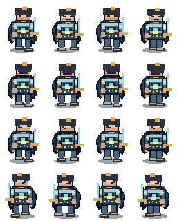
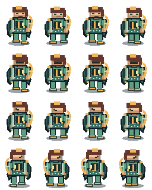
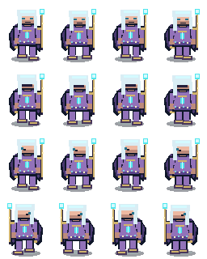
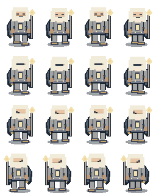
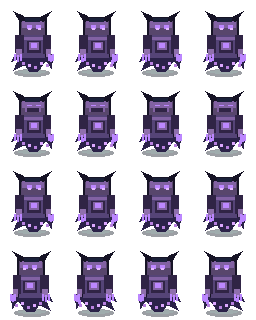
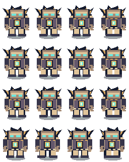

Üç kahraman, NPC, yaratık ve boss. Her sprite özgün 64×80 piksel karelerle; dört yöne, dört hareket karesiyle oluşturuldu. 96 kare. Bu sayfa çizim kalite denetimi içindir, oynanabilir oyun değildir.






3.7 görsel test oyununu aç · 3.6 ana oyun